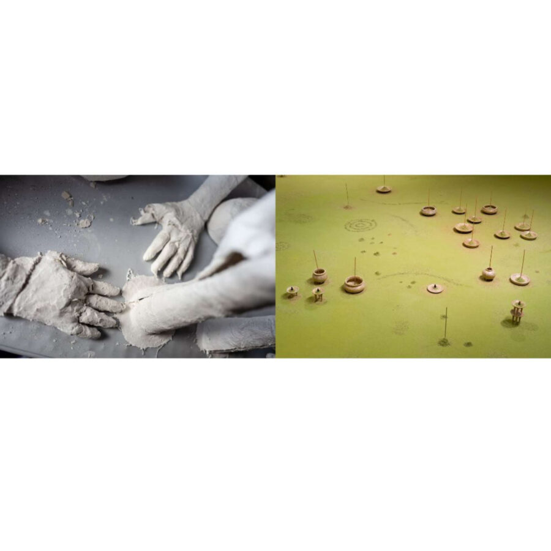

From Its Own Ashes
Chicago Artists Coalition presents From Its Own Ashes, a two-person exhibition by 2024-26 Artist Residents Isaac Couch and Sangwoo Yoo, curated by 2024-26 Curatorial Resident Francine Almeda.
“Last night, when I escaped from the neighborhood, it was burning. The houses, the trees, the people: Burning. Smoke awoke me” says Lauren Olamina, the fictional protagonist in Octavia Butler’s seminal text, Parable of the Sower. Set in a not-too distant post-apocalyptic reality, Olamina awakens to the loss of her community. Staring at the remains of her old life, Olamina gathers herself and flees towards an unknown future. This moment famously becomes the crucible that propels Olamina to the creation of Earthseed, a belief system whose philosophical center holds that change is the foundational force towards liberation. Published in the 1990’s Parable of the Sower has been lauded for its prophetic resonance with our present. Butler’s reflections on economic disparity, environmental devastation, and systemic discrimination are continuous throughlines in our contemporary times. In writing Parable of the Sower, Butler changed the trajectory of a generation by extending insurmountable challenges into a realm of poeticism – utilizing metaphor as a mirror, inviting the reader to contend with the capacities of chaos to be a condition for change.
With similar mechanisms and social inquiries at its core, From Its Own Ashes is a duo exhibition by Sangwoo Yoo and Isaac Couch that originates from both artists’ personal navigation of loss. Yoo recalls encountering a felled Christmas tree in downtown Chicago as a pivotal moment of unexpected sorrow, its fallen form symbolising both the tree’s life giving force and the grief he holds for friends and family lost; Couch embodies a similar mourning for loved ones lost, drawing upon his upbringing within the American Southern and the constraints of western garment design as a metaphor for the destructive forces of systemic oppression. Although influenced by grief, both artists embrace the potentiality of instability. Working across sculpture, scent, video installation, and garments, Yoo and Couch investigate how these processes of loss (both material and spiritual) can become an alchemic, generative site of transformation.
Anchoring the exhibition is a collaborative installation by Yoo and Couch. Couch’s ephemeral sculpture, suspended from the ceiling, consists of a “winding cloth” garment entombed in plaster, its final form suggesting both the figure and its void. His designs are simultaneously functional and narratively conceptual, referencing historically restrictive western fashion only to alter their constraints into garments for an alternative, imagined future. Surrounding Couch’s sculpture, Yoo’s incense vessels are carefully arranged – these vessels are hand built from a solid tree resin, made from the gathered pine needles from the fallen christmas tree. In using tree sap, Yoo alludes to its medicinal history as a remarkable healing material. At the core of his practice is an exploration of healing through cycles of decay and growth, transmuting a single source material (gathered pine needles) into resin, oil, and dust, which manifest as vessels, incense, and sculptures, and thus creating life anew.
From Its Own Ashes is both a haunting and a ceremony – an acknowledgement of a departure and celebration of something to come, implying that beginnings and endings are not fixed points but part of a continuous gesture. Throughout the exhibition, Couch’s figures emerge like specters, never fully there: a torso draped in chainmail stands silent addressing the viewer, or an arm extending incense as if providing an offering. Yoo’s works are in an equal state of disappearance – incense that becomes smoke, paper boats that float away towards a distant horizon. Through these moments of arrested alchemy, they do not present resolution, but rather revel in this state of transition. Couch and Yoo’s works become akin to votives, creating a place for the viewer to quietly meditate on their own relationship to disappearance and loss, perhaps offering a hushed conviction that destruction can lead to a new dawn.
The opening reception will be on January 9 from 5-8pm.
About Curator
Francine Almeda is a Chicago-based Filipina-American gallerist, independent curator, cultural producer, writer, and DJ. She is the Founder and Director of Tala, an independent contemporary art space and gallery with a multitudinous program containing a library and atrium marketplace. Prior to this, she founded Jude Gallery, an artist-run project and exhibition space which ran from 2021-2024. As a gallerist, Francine builds community-based platforms for artists that encourage transdisciplinary experimentation of all mediums with the goal of proposing new realities. Her practice nurtures new methods of collaboration in order to expand the capacities of art as a caretaking tool. With a focus on conceptual, narrative-driven curatorial projects, and public programming, Francine supports QTBIPOC artists at all stages of their career. She has spoken and sat on panels across Chicago, including the Arts Club of Chicago, Soho House Chicago, and The Silver Room. She was a participant in the ICI’s Curatorial Seminar (2022), and is currently a Curatorial Resident at Chicago Artists Coalition (2024-2026).